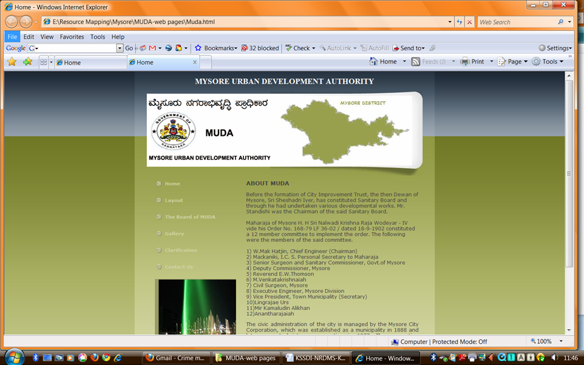
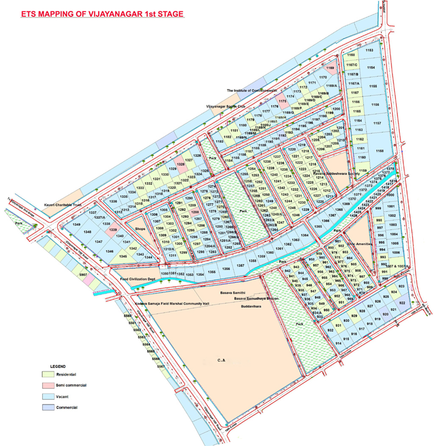
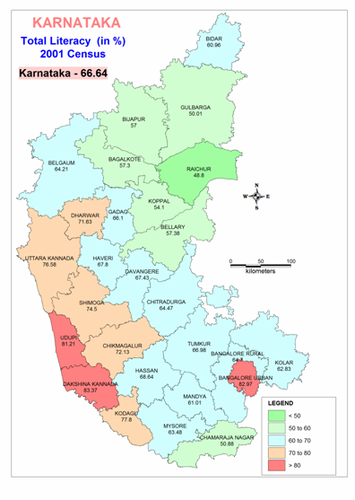
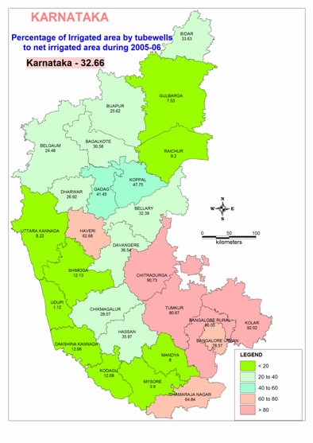
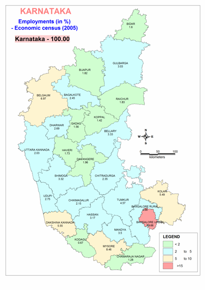
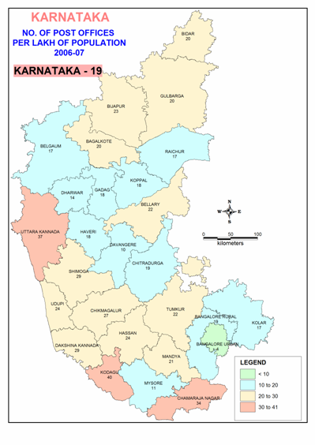

Numbering of houses in the Bangalore city as carried out by the City Corporation in the 70's was found to suffer from a lot of deficiencies since it did not follow a common logic. Therefore it caused difficulty to the citizens of Bangalore, visitors to Bangalore and even utility service departments like the Water supply, Post & Telegraph in locating particular addresses.
A new system was designed after studying various numbering systems followed in many cities. As on off shoot to the work, preparation of maps of Bangalore city was undertaken. A detailed layout map as well as smaller maps of 1:10,000 scale were prepared and printed. These tasks were completed in 1979.
The numbering system divided the city into zones, each following a local coordinate system, broadly identifying the east-west and north-south roads. Each house was identified by a multi-digit number. The first two digits indicated the intersecting cross roads and the other digits referred to the physical location of the address. Buildings on one side of the road were numbered odd and even numbers were given to buildings on the opposite side.
Though finalized about 8 years ago, this system has not yet been implemented fully in the city of Bangalore. Meanwhile, the city had grown many times beyond its size after 1970s. With the increasing pressures of growth, the city planners may once again consider rationalizing the system of house numbering more seriously.
Based on aerial photographs, street maps have been prepared. The City Corporation and Bangalore Development Authority were involved in confirming the accuracy of the maps. The streets and localities were then indexed. This information was brought out in the form of a street atlas and index titled Bangalore A-Z.
In order to popularize the achievements and methods of science, and thereby inculcate a scientific attitude in Karnataka, particularly among students and the rural populations, KSCST identified a project on 'Popularisation of Science' in 1977.
The objectives of the project were two-fold :
| 1. | To produce a science magazine in Kannada catering to the age group of 10-15 years. |
| 2. | To co-ordinate the activities of the various voluntary agencies/organisations presently engaged in popularisation of science, with special emphasis on programmes geared to reach rural masses. |
In pursuit of its objectives, the Working Group brought out in June 1978 a monthly science magazine in Kannada with high-school students as the target group. This magazine 'BALAVIJNANA' was distributed free to all the high-schools and village panchayats in the State for a specific period. Through the production of the magazine, KSCST has been successful in securing the willing and enthusiastic participation of individuals and organisations hailing from different regions of Karnataka. The magazine is being published with an editorial board of four members, having Prof. J. R. Lashmana Rao as Chief Editor.
After the successful fulfillment of one of the objectives of the project, namely, to produce a science magazine for high school children, the Working Group took up in 1980 the task of coordinating the activities of several organisations in the state actively involved in science popularisation. Towards this end, the Working Group suggested guidelines for the formation of Karnataka Rajya Vijnana Parishat with the objective among others of continuing the activities of the KSCST project on popularisation of science.
KSCST had identified public administration as one of the important areas for introduction of computers as a means of improving the efficiency of administration and increasing data file handling. Accordingly, a project titled ' Computers in Administration' was initiated in 1980 with the primary objectives of :
| 1. | Detailed analysis of the flow of information in the critical areas and identifying steps involved in the decision making process; |
| 2. | Identifying the appropriate areas where computers could be used as an aid to the decision making process; |
| 3. | Demonstration of the use of computers in these areas by actually installing and developing software for the purpose. |
A preliminary study indicated that while enormous amount of data was available for processing the then existing decision making process did not make use of all the data. Microcomputers were making a headway, during that time, in the front end of information technology in Indian industries. Smaller machines with extremely large memory capacity and fast processing capabilities were becoming a reality. It was felt that this was the right time to evolve a strategy for the introduction of computers in Indian administration so that there would be a gradual and smooth transition from manual processing to EDP. Therefore the council initiated this project in collaboration with the office of Deputy Commissioner of Gulbarga district.
The Urban Ecosystem approach involves a study of cities "as the loci of living population interacting with natural and built environment. These interactions take place within a boundary permeable to inputs and outputs. Transactions in the city require energy and other resources with different amounts of knowledge and organisation to maintain life. The resources, particularly energy are supplied in the form of food and fuel, and indirectly in the form of material inputs".
Such an urban ecosystem approach permits the identification of resource-conserving programmes which in turn can have a profound effect on the planning of cities when these programmes are coupled with appropriate policy and institutional measures.
| Principal Investigator | Mr. H. Hemanth Kumar |
| Duration | Three months |
Mysore Urban Development Authority, Mysore intends to setup a web based GIS system to observe, monitor, update and inspect various properties and plots within the MUDA area with the information on availability of other amenities like telephone lines, electric poles, drains, water and sewage details, roads width, pavements width, CA / parks / playgrounds etc. The solution is also anticipated to provide site plan view, link with photographs, have better control in data collection related to plot information and management. KSCST has the opportunity to discuss with MUDA Authority to understand the intricacies of the various processes involved and operational requirements in managing the property details and come up with an appropriates geospatial technologies.
The project was planned and implemented in three stages.
1. Detailed surveying and mapping of MUDA areas.
2. Hyper linking of property details, site plan view and photographs of buildings.
3. Development of web based information system.
The Council in this context initiated a pilot project to conduct surveying, mapping and hyper linking of digital images of properties in Vijayanagar 1st Stage, Mysore to ascertain the techno-economical feasibility of the Web-GIS for property management and information system. In this pilot project Council utilised the available in-house human and infrastructure resources to carry out the project. The funding requested from MUDA was only for electronic total station surveying. The study provided the Council an opportunity to properly ascertain the economics of this project. The Council completed the surveying and mapping of Vijayanagar 1st stage using ETS, GPS, satellite imageries and a website was also developed for MUDA authorities. Council further submitted a Detailed project report (DPR) providing all the technical and financial details to effectively implement the Web-GIS for property management and information system project.


| Principal Investigator | Mr. H. Hemanth Kumar | |
| Duration | Three months |
The study proposed to assess and understand the science and technology developments in China during the last decade. In this context the study was aimed at assessing the human resources pursuing science in China, the system of science education prevailing in the country, the thrust areas in the research institutions in the country. The development of a geo-spatial database on china with special emphasis on the science and technology was also formed a part of the study.
1) Collect data on institutions providing science and engineering training / education / research in China with the available resource/data in public domain.
2) Collect data on the research publications on areas such as, Electronics, Aeronautics, Material Sciences, energy in the last one decade.
3) Analyze the data to determine the thrust areas, the kind of international collaborations, and their science and technology capability.
4) Prepare a GIS database on China along with attribute data on Population, socio economic parameters, science and technology development indicators (number of higher education institutes, number of scientists / engineers, to mention a few)
The data to be used for the study will be from the public domain. This will involve surfing the internet, collecting data from encyclopedia, Atlas, Research Journals and documents/ reports available on the net. The data needs to be collated and a summary report on the status of science and technology has to be prepared.
The investigator submitted a detailed technical report on the science and technology status of China using geospatial technologies. A geospatial database of China along with attributes data on the parameters mentioned above was also incorporated in the report.
| Principal Investigator | Mr. H. Hemanth Kumar | |
| Budget | 3.96 Lakhs | |
| Duration | Three months |
The State Planning Board, Directorate of Economics and Statistics and the Council have jointly taken up the task of preparing "Planning Atlas of Karnataka" in the form of pictorial representation and statistical information on development indicators. The Planning Atlas mainly depicts development indicators in the country as well as different districts / regions of Karnataka. The council integrated the data sets and prepared geo spatial data on development indicators using geo spatial technologies.
This publication is the first and foremost of its kind in the Directorate of Economics and Statistics as well as in the State. This publication contains indicators of various parameters for the development of the State economy, infrastructure etc., and this report broadly throws light on the current level of achievement in important sectors. The same can be treated as a basis to gauge the extent of achievement made. This Atlas has been prepared in three parts viz.,
Part I : Inter-State position of important indicators of development among 19 major States
Part II : Rank Charts of Divisions according to the level of development.
Part III : Charts and Maps of the Districts based on the indicators of development.
The Atlas mainly relates to Karnataka's position with regard to important indicators of development among 19 major states in India. This publication will be of immense use to planners, researchers, academicians and administrators and also to those who are prone to the positive growth of the nation in framing the measures for a comprehensive development for future. It will guide them to give proper directions towards developmental programmes, which ensure welfare and progress of the State.
The document contains 275 pages out of which more than 125 pages are dedicated spatial representation of developmental indicators. The council published the Planning Atlas on behalf of Directorate of Economics and Statistics.




| Principal Investigator | Mr. H. Hemanth Kumar |
| Supported by | BDA, Bangalore |
| Duration | Three months |
Bangalore Development Authority intended to create digital database of all the layouts coming under its jurisdiction to plan and monitor all its developmental activities using geospatial technologies. Bangalore Development Authority from the day of its inception has developed layouts and has made site allotments of about 2 lakh numbers of sites to general public. During the last one decade more than 10 new layouts have been added to the growing city by BDA. The authority has more than 1500 map sheets in hardcopy format which requires to be converted into digital layers for access, search, discovery as well as updation for planning and administration.
The main objective of the assignment is to digitize layout maps of BDA using geospatial technologies and integrate them on a GIS platform.
The estimated cost of converting paper maps into digital maps using geo-spatial technology is expected to be around Rs. 1 crore. Digitization work will be taken up in phases and each time 50 maps are expected to be released from BDA for digitization.
Scanned sheets available with BDA about 1000 will be taken up for integration in the 1st phase in a phased manner. Retracing of maps for about 200 layout maps available with the department will also be taken up in the 1stphase. In the 2nd phase maps available with BDA in severely damaged shape will be taken up for retracing and reconstruction using latest geospatial techniques and high resolution satellite imageries(wherever Google images suffice it will be used in reconstruction of the maps).
To begin with all the soft copies available with the department for the planning districts will be integrated with Bangalore city map with proper georeferencing. Changes in land use would also be done in consultation with the officials of the department to all the layout maps. The hard copies will be taken up for integrating with Bangalore city map in the second phase.
| Co-ordinators | Mr. H. Hemanth Kumar Shri U. T. Vijay |
The Government of Karnataka has taken a great leap forward by presenting a separate budget for Agriculture for 2011-2012 highlighting the great importance and the political will to improve livelihoods of the small and marginal farmers. In this context, the GoK has launched Suvarna Bhoomi Yojane (SBY) to kick start the engine of agriculture development in the state for improving the socio-economic status of 1 million small and marginal farm households by providing an incentive of Rs 10,000 per family for transforming two acres of their land from low-value to high-value crops during the year 2011-12. Suvarna Bhoomi Yojanecovers 10 lakh farmer families including 2 lakh Scheduled Caste and 1 lakh Scheduled Tribes. The project envisages covering Agriculture, Horticulture, Sericulture, Pisciculture, etc. Department of Horticulture, GoK has taken a challenge on their hand to help 0.25 million small and marginal farm house holds (HHs) under SBY and helping them to shift from low-value crops to high-value horticultural crops (fruit trees, vegetables, spices, and medicinal and aromatic plants).
The highlights of "Suvarna Bhoomi Yojane" are as follows:
The Council is providing support to Agriculture Department as an external field verification agency for tracking the progress and performance of the project, and assessing the impacts of intervention in Kolar, Chickkaballapura and Bijapur districts. The Council has completed the process of field evaluation and is in the final stages of completing the project.
| Project Investigators | Dr. M. Prithviraj Shri U. T. Vijay |
The council had submitted the project proposal on 'Digital Geospatial Data Generation and Terrestrial Scanning for 3D Reconstruction of Heritage Site at Hampi' solicited by the Department of Science and Technology, Government of India under Indian Digital Heritage (IDH) programme. Considering the council's vast experience and expertise in the application of Geospatial technologies for governance, Natural resources management and Infrastructure development, the DST-GOI had sanctioned to KSCST the implementation of the project on pilot basis initially for 6 months at a cost of Rs.20,000,00/- for understanding the technology and verifying its utility in the programme.
The Department of Science and Technology, Government of India had awarded the project in the month of February2011.
The following activities have been carried out.
The findings of the pilot project and the scaled up project was presented to the Expert Committee which met at IIT-Chennai on 14/3/2012, under the Chairmanship of Prof. Ashok Jhunjunwala. The Committee appreciated the progress and timely completion of the pilot project after incorporating the suggestions of the Committee. The Committee strongly felt that the scanning has to be carried out by procuring the state of the art scanners and the Council should lead this project. It was also suggested that KSCST during the course of implementation of this project should also train research scholars of all the other technical projects in this technique and create a strong trained technical manpower.
| Principal Investigators | Dr. M. Prithviraj Dr. S.G.S. Swamy |
| Co-ordinator | Shri K. N. Venkatesh |
| Budget | Rs. 120 Lakhs |
| Funded by | KSTePS, DST - GoK |
Under the Special Development Programme (SDP) of Government of Karnataka, Department of Planning Karnataka Science and Technology Promotion Society (KSTePS), Department of Science and Technology, Government of Karnataka (DST-GOK) and Karnataka State Council for Science and Technology (KSCST), Bangalore are jointly implementing Virtual laboratories in 10 high schools as a pilot-study in the backward talukas of Karnataka.
The objectives of these laboratories are to improve the quality and effectiveness of education by collaborative learning and teaching process through IT gadgets. The students will learn science experiments, inculcate scientific attitude and spread the same with their neighbourhood.
KSCST had requested Director, DSERT and DDPI's of district to suggest the names of schools to implement the above project. Also, the Council had deputed project associates to visit these schools and collect the authenticated information. Based on the information provided by the school authorities and report by our staff the following schools were selected for implementation.
The Council had constituted a Core Committee under the Chairmanship of Prof. S. Sadagopan, Director, IITB and it convened a meeting on 6th December 2013. The Core Committee constituted two subcommittees viz., Content Development Committee and Hardware Procurement Committee for selection of appropriate platform and contact. Prof. K. Siddappa, Fomer Vice Chancellor, Bangalore University and Shri T. Shankar, Department of Computer Science and Automation, IISc are the subcommittee chairman respectively.
The Content Development Committee has met on 13th January 2014 and reviewed the contents developed by various educational institutions. Few science teachers of Bangalore city were also invited to discuss the content of the new syllabus. The Council had arranged an interactive meeting with the representative from the selected schools on 21st January 2014 to discuss various modalities to be adopted for the project implementation.
The Hardware Procurement Committee met on 17th January 2014 at KSCST under the Chairmanship of Shri T. Shankar, Dept. of Computer Science & Automation, Indian Institute of Science, Bangalore. During this meeting, the members discussed issues regarding providing IT services to remote places through standard IT Components readily available in the market. The Technical Hardware Procurement Committee, after rigorous evaluation and demonstration of all vendors have concluded that the vendor M/s Televital (India) Pvt. Ltd., to be considered for execution of the project. KSCST is also interacting with the Commissioner of Public Instructions, Department of Education, Government of Karnataka and respective DDPI's for successful implementation of the programme at different locations.
| Principal Investigator | Dr. S.G.S. Swamy |
| Co-ordinator | Shri K. N. Venkatesh |
| Budget | Rs. 19.70 Lakhs |
| Funded by | DST - GoI |
KSCST is implementing the programme - Student Projects Programme [SPP] since the year 1977. Under this programme, KSCST has been providing financial assistance and academic support to the final semester engineering students of various branches, in the state of Karnataka.
KSCST Library contains all the project reports of these sponsored projects are carefully collected for easy reference by potential project investigating students. As on today, KSCST library has about 6500 such project reports collected from Series 1 (1977-78) to Series 36 (2012-13). The students who are keen to refer to these reports come to KSCST and spend their valuable time in referring these project reports.
As suggested by the sanctioning authority, the Local advisory cum technical committee was constituted under the Chairmanship of Prof. L. Umananda, Department of Electronic Systems Engineering, Indian Institute of Science. The committee met two times (22nd March 2013 and 17th June 2013) and deliberated on various aspects of creation of digital repository of the reports of student project programme.
Further, the committee deliberations and based on the suggestion of Raman Research Institute, Bangalore the committee suggested that the technology offered by M/s. Sriranga Digital Software Technologies, Srirangapatna is appropriate for project to be implemented. The same was brought to the notice of the Executive Committee held on 22nd August 2013 for their advice and approval. After the deliberations in the Executive committee, have approved for the same. The task of digitization of SPP Reports has been entrusted to M/s. Sriranga Digital Software Technologies. Initially KSCST has provided 349 project reports of SPP reports for digitization and work is under progress.